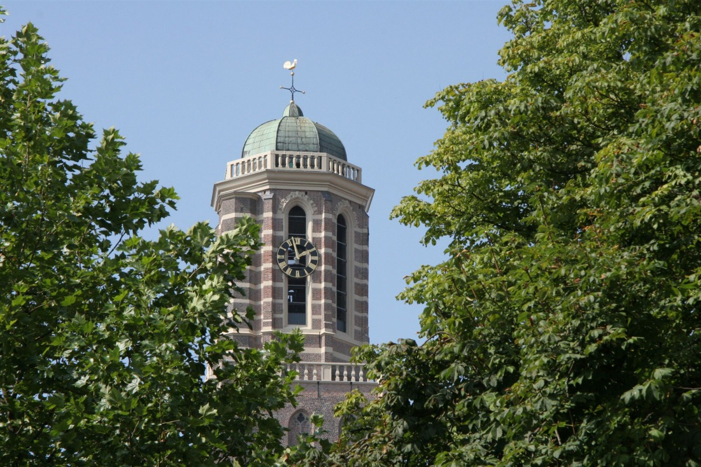
I

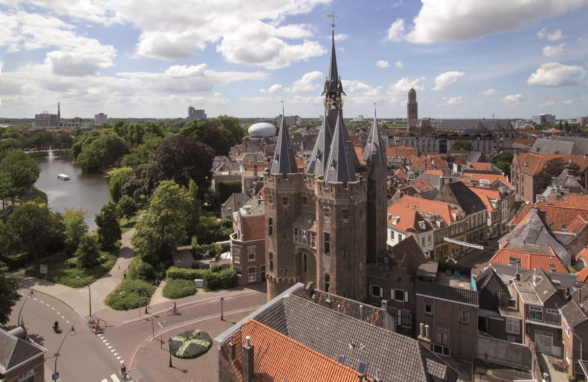
Sole survivor of Zwolle's three medieval gates: trachyte, tuff and Bentheimer sandstone, restored 1894–97 by Van Lokhorst [3]. Climb ~100 steps past four floors of Hanseatic exhibits to the clock mechanism — compact but rich in atmosphere [5].
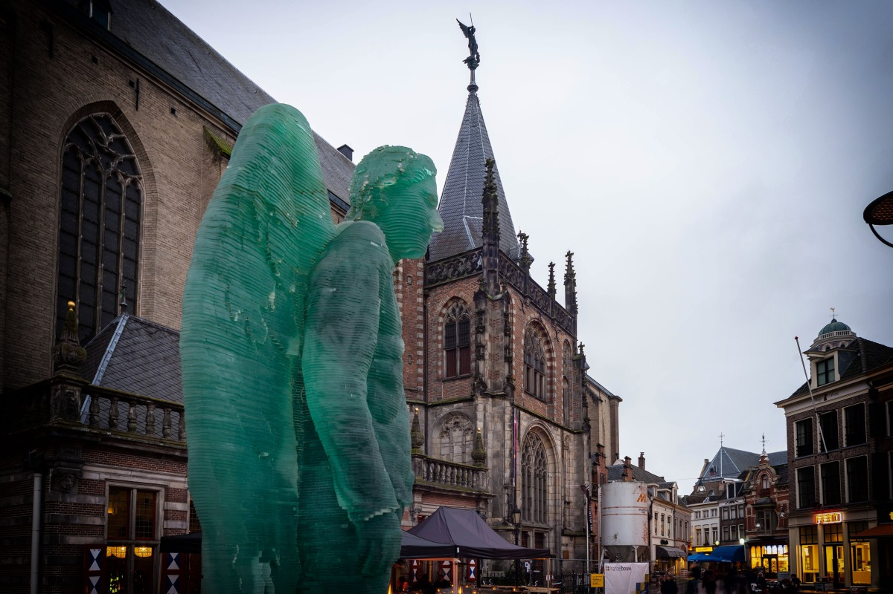
Lower-Rhine Gothic hall church whose 115–120m tower — briefly taller than Utrecht's Dom — collapsed 17 December 1682 and was never rebuilt [6]. Restored as Academiehuis: day café, book market, 1721 Schnitger organ [8].
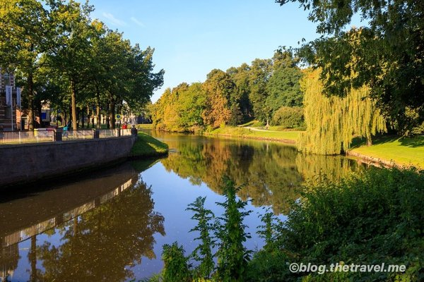
The 17th-century moat's south rampart, redeveloped as a wooded promenade in the early 19th century — the cleanest way to read the star plan on foot, city on one side, canals on the other [10]. The 2.4 km Hanzestadswandeling loop traces the same ring [32].
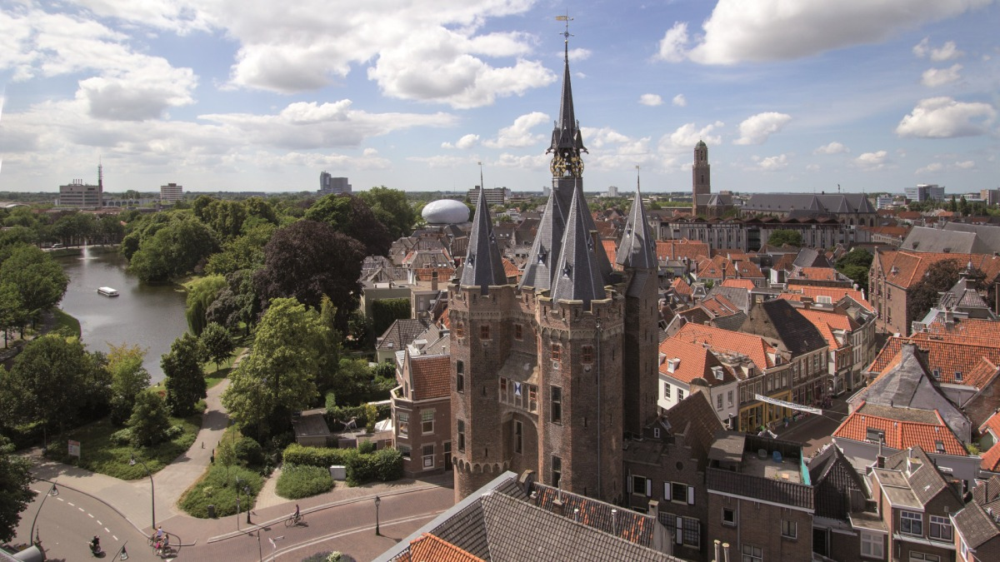
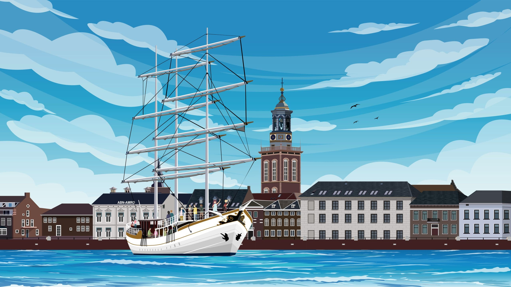
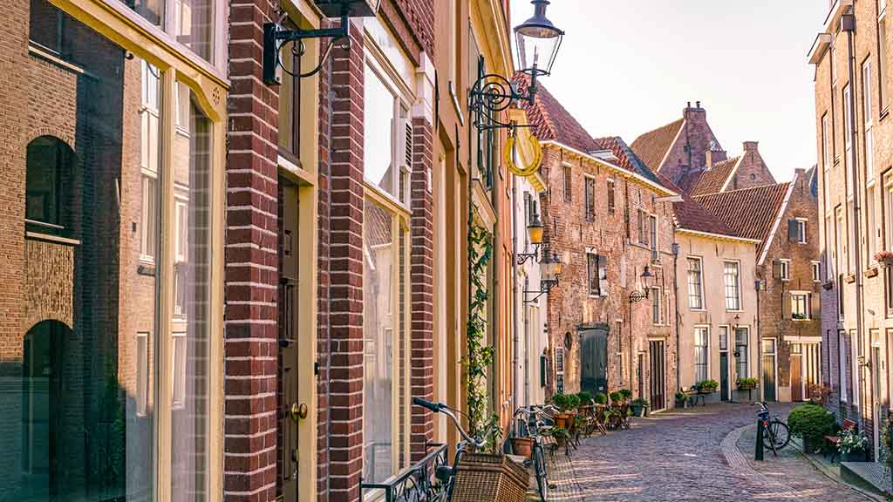
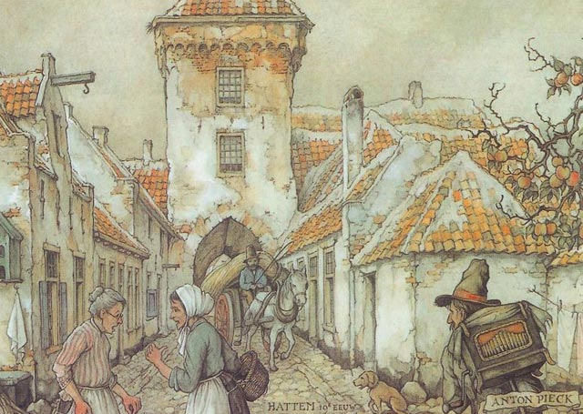
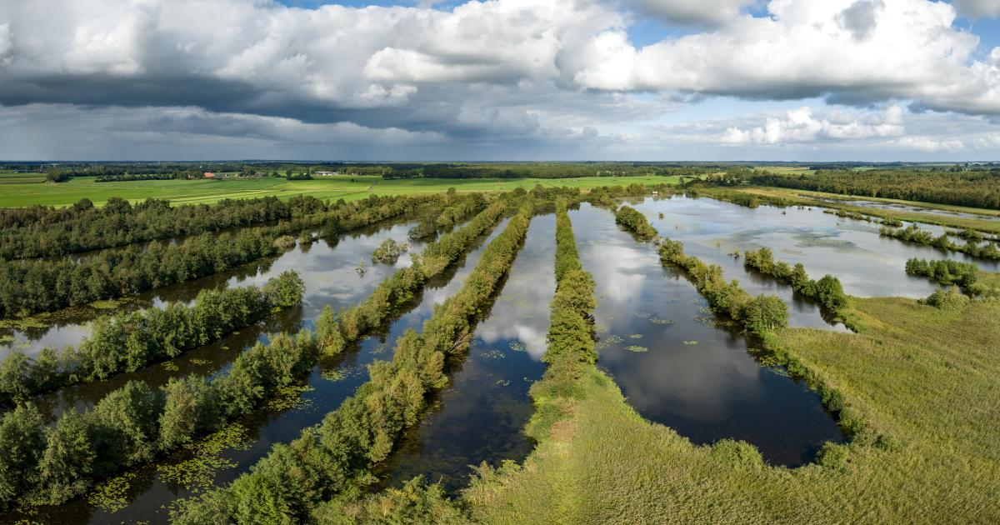
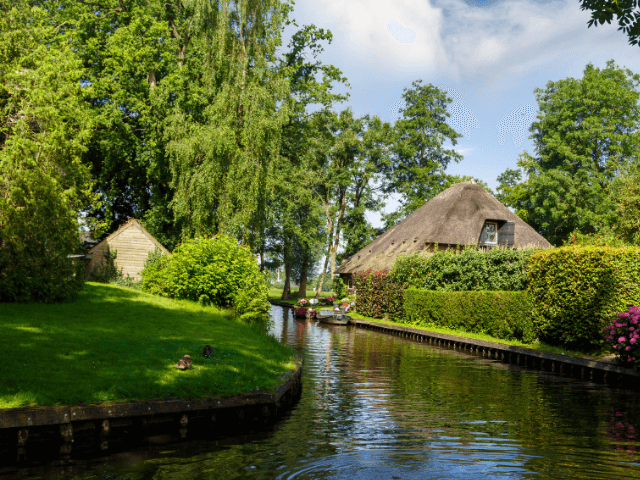
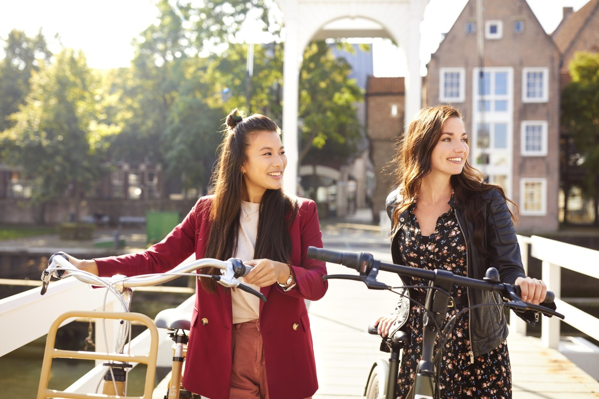
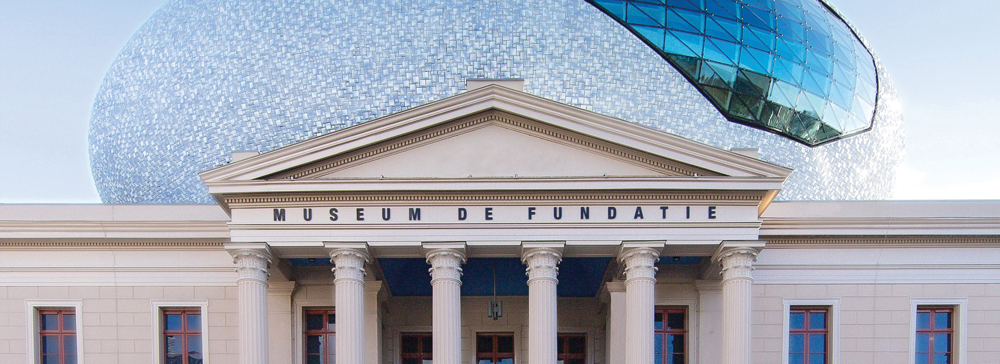
1838–41 neo-classical palace topped by Hubert-Jan Henket's 2013 elliptical rooftop — "The Eye" or "The Cloud" — clad in 55,000 white-blue tiles, locally nicknamed the egg, UFO, Zeppelin or spaceship [12]. Recent shews: Back to Benin, Chourouk Hriech, Buhlebezwe Siwani [14].
Opened 12 May 2022 in the Drostenhuis as spiritual successor to Stedelijk Museum Zwolle — unique in combining museum, archaeology, architectural history, monuments and archives under one roof [16]. Ter Borch, Thuis in Zwolle extended due to popularity [15].
Restored Grote Kerk: late-medieval wall paintings, day café, indoor book market, and the 1721 Schnitger organ — one of the most significant historic organs in the Netherlands [20]. Check the concert calendar; free wander-in.
Odeon, opposite De Fundatie, is one of just six original 'bonbonnière' theatre halls in the country [17]; paired with the modern Theater de Spiegel (2006) for 400+ shows/yr [18].
Live-music venue on Burgemeester Drijbersingel; where Zwolle goes for indie / electronic / rock acts after dinner [19].
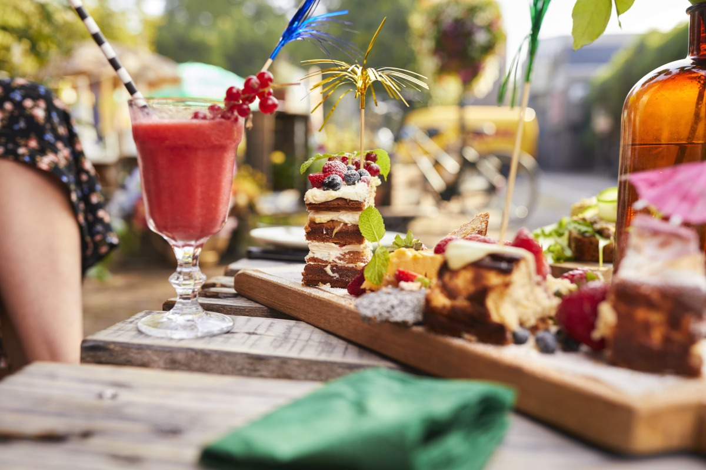
The weekend of 26 May falls into the festival window. Zwolle Unlimited is a free outdoor cultural festival at the Thorbeckegracht / Pelserkade waterfront, Fri 29 May – Sun 7 Jun 2026, with eight themed days — choir, world music, blues, Afrobeat, the Nemia children's festival, a craft market [83][89]. Also: Wine Festival Zwolle on Grote Kerkplein, 5 June [88].
~75 trains/day from Amsterdam Centraal, avg 1h18m, fastest 1h06m [78]. ~97/day from Schiphol, avg 1h22m [77]. Zwolle is on NS's IC backbone.
OV-fiets at Zwolle Centraal and Hanzeland, €4.45/day, ~05:05–01:30 [79]. Deelfiets e-bikes on both sides of the station [80]. World's best cycling city 2021 [30].
Three zones (1 priciest). Best garages: Katwolderplein under Pathé (voted best in NL, 9 rating), Q-Park Maagjesbolwerk, Noordereiland near De Librije [81].
Late May / early June: 18–20 °C day / 8–11 °C night, ~8 hrs of sun, 11–12 rainy days/month [82]. Pack layers and a light shell.
The tourist office sits in 'De Hoofdwacht' on Grote Markt 20, with a secondary info point at Het Zwolse Balletjeshuis, Grote Kerkplein 13 [87].
Sassenstraat (top-10 nicest in NL) and Luttekestraat hold the indie boutiques and vintage; Diezerstraat is chain territory [56].